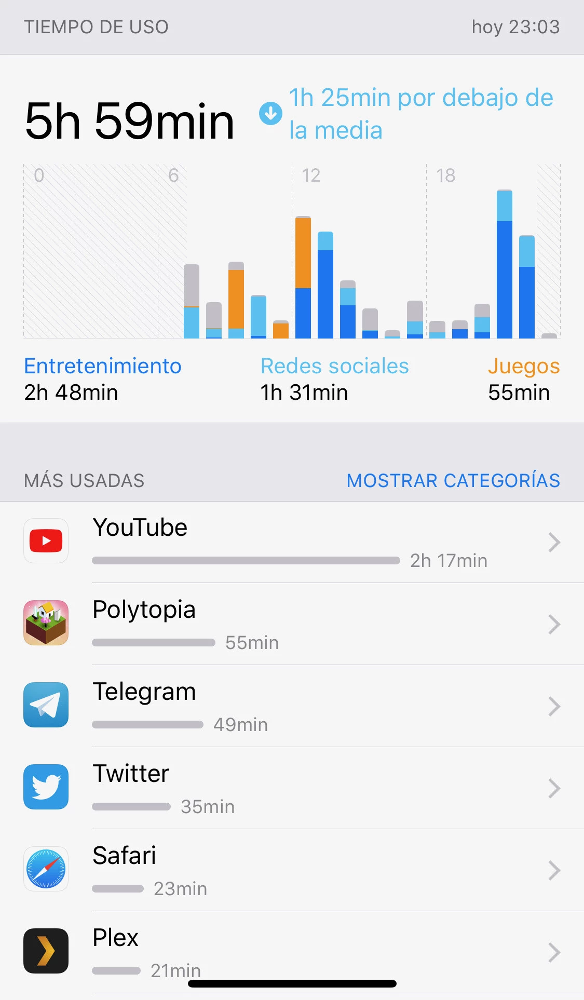

Introducción
¿Alguna vez has pensado cuántas horas pasas al día frente a la pantalla del móvil? ¿Crees que ese tiempo influye en tus horas de sueño, en tu rendimiento académico o en tu gestión del ocio?
|
Te mostramos un ejemplo: Mira esta imagen... ¿Te resulta familiar? Según las estadísticas, pasamos un tercio de nuestro día frente a una pantalla. |
 |
Vivimos en una sociedad en la que convivimos a diario con datos, gráficas e información cuantitativa, especialmente a través de los medios digitales. Sin embargo, muchas veces consumimos esta información de forma pasiva. ¿Alguna vez te has parado a pensar en tus propios datos? ¿Crees que el tiempo que pasas usando el teléfono móvil podría estar afectando a tus horas de sueño o a tus hábitos de estudio?.
Como has visto en el vídeo, en el mundo de la información es muy fácil confundir una simple coincidencia con la causa real de un problema. En nuestro día a día generamos infinidad de datos, pero necesitamos herramientas para saber interpretarlos correctamente.
Seguro que en vuestra clase muchos os quejáis a menudo de estar cansados, de dormir poco o de que no os cunde el tiempo para estudiar. ¿Qué os parece si nos convertimos en investigadores de nuestra propia realidad? ¿Cuántas horas pasamos realmente en redes sociales? ¿Influye ese tiempo de uso en nuestras horas de sueño o en nuestro rendimiento académico?
Utilizando la estadística bidimensional podremos dar respuesta empírica a estas cuestiones. Diseñaremos cuestionarios para recoger nuestros propios datos y utilizaremos hojas de cálculo para organizar la información y crear gráficos visuales como las nubes de puntos. Además, investigaremos si existe una relación matemática real entre nuestras rutinas mediante el cálculo de la correlación y la recta de regresión, diferenciando críticamente entre la simple coincidencia estadística (correlación) y la causa directa (causalidad).
| El objetivo final será elaborar por equipos un informe estadístico digital y presentarlo ante el resto de la clase. Con este proyecto no solo aprenderemos matemáticas, sino que desarrollaremos nuestro espíritu crítico, consolidaremos nuestra competencia digital y daremos un paso más para convertirnos en ciudadanos capaces de tomar decisiones fundamentadas y responsables frente a los retos de la actual sociedad de la información. |
¿Qué es la estadística bidimensional? Es la parte de las matemáticas que estudia y analiza dos variables al mismo tiempo sobre una misma población para comprobar si existe dependencia o relación entre ellas. Por ejemplo, en lugar de analizar únicamente "las notas" de una clase, estudiaremos "las notas" y "las horas de uso del móvil" de cada alumno para ver si ambas variables están matemáticamente conectadas.
Correlación no es causalidad La correlación indica que dos cosas cambian al mismo tiempo (como, por ejemplo, que en verano aumente la venta de helados y también los ataques de tiburón). La causalidad, en cambio, significa que un evento provoca directamente que ocurra el otro (el sol hace que el hielo se derrita). ¡En este proyecto aprenderemos a usar los datos para no caer en trampas lógicas!.